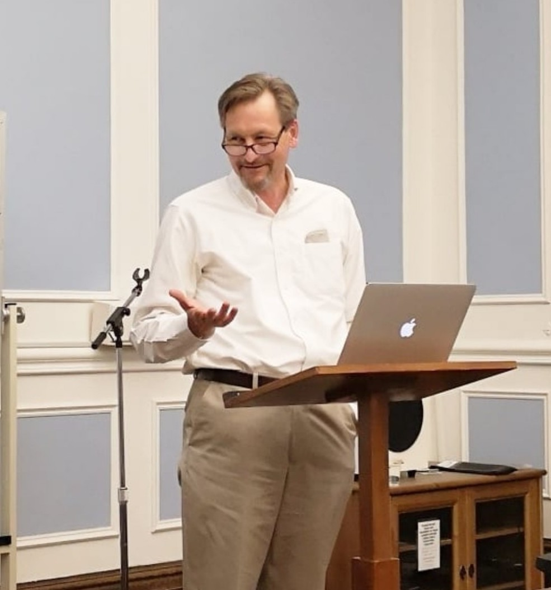

Jeffrey Dudiak, Phd.
Home
About
Books
Media
Calendar
Connections
Home
About
Books
Media
Calendar
Connections
Connections

I am Professor of Philosophy at:
The King's University, Edmonton
I am cross appointed to:
The Institute for Christian Studies, Toronto
I am an adjunct Professor at:
The University of Alberta, Philosophy Department
I serve on the Executive Committee of:
The Friends Association for Higher Education
I am the editor of the journal:
Quaker Religious Thought (Quaker Theological Discussion Group)